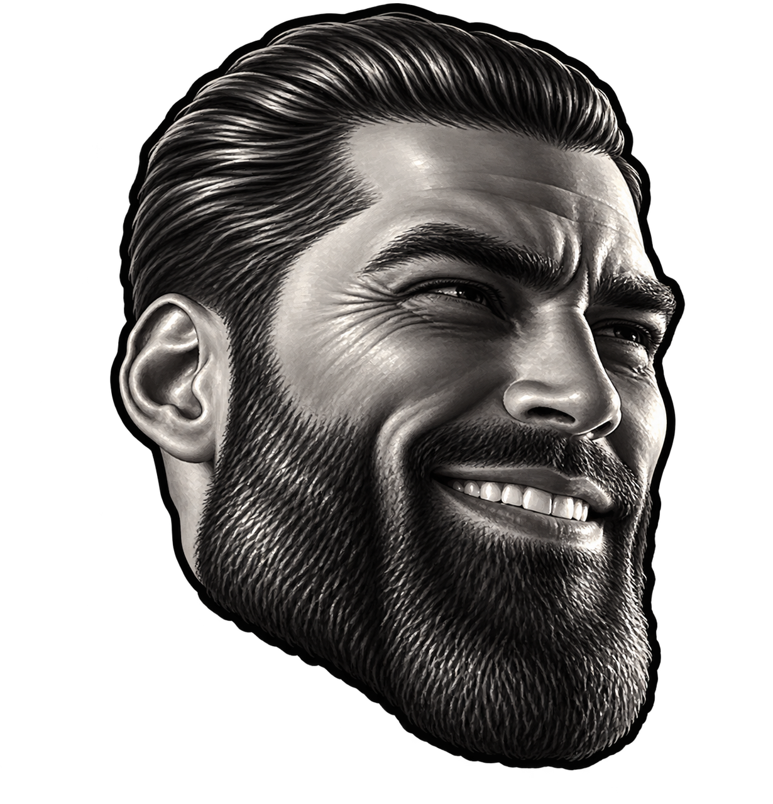
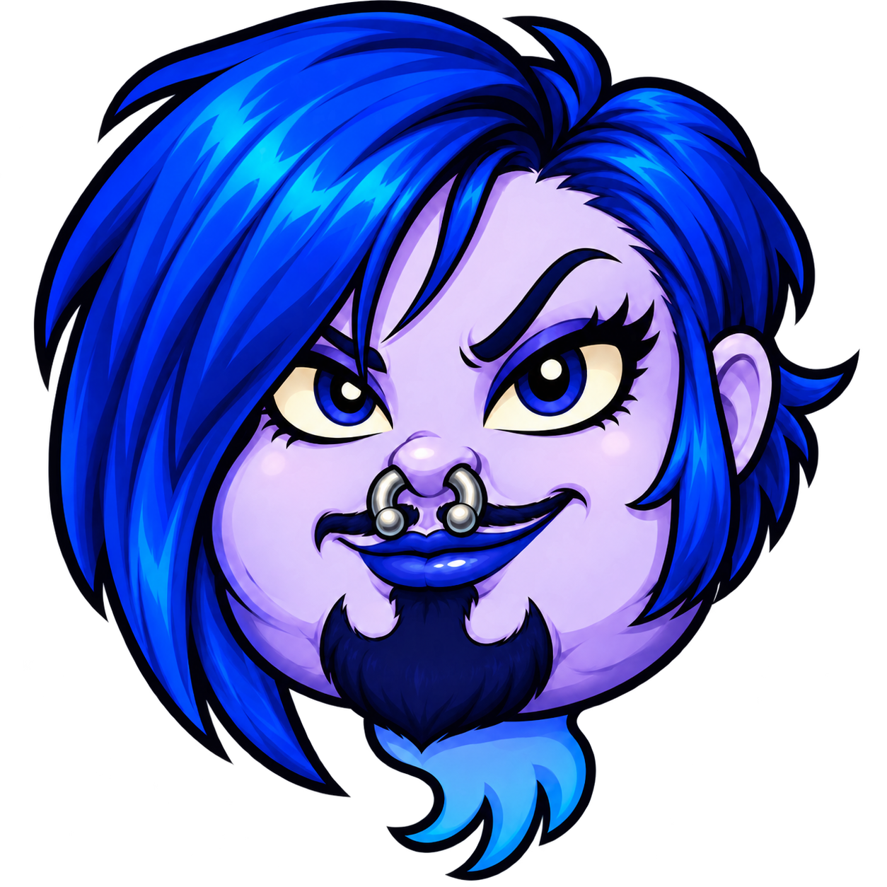
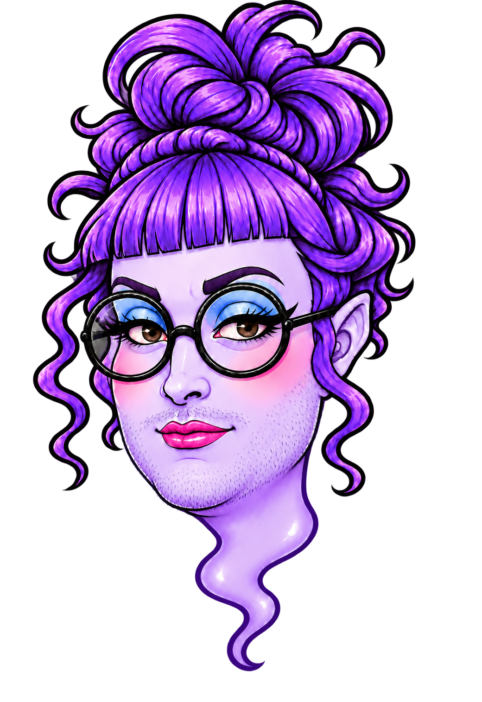
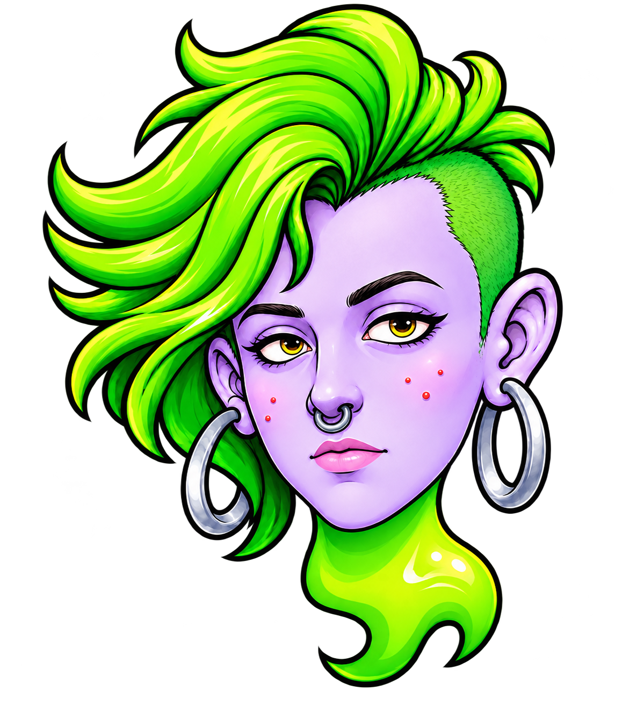

01 / THE CHASER
ROOK
Blue bob. Broad jaw. Goatee.
Follows your trail relentlessly.
 GAMESLOP ARCADEMEET THE CHASERS ↗
GAMESLOP ARCADEMEET THE CHASERS ↗A GAMESLOP MAZE CHASE
Eat the Meek
High Testosterone, Higher Scores




+1600Keep eating to build your combo. Every 20 pellets adds a multiplier, up to 5×. Stop collecting for 2.5 seconds and it resets.
Big glowing pellets give you seven seconds of Chad Mode. Catch ghosts in a row for 200, 400, 800, then 1,600 points.
Your ability recharges in ten seconds. Watch for new shortcuts, clear every pellet, and conquer all ten levels. There is no time limit.
ONE SPECIAL PICKUP IN EVERY LEVEL.
Each collectible activates on contact for five seconds. Find its star on the minimap. Pre-Workout ends early after three blocks. Ordinary power pellets still give you seven seconds of Chad Mode.
FOUR FACES. FOUR PROBLEMS.
Learn the look.
Anticipate the move.
Blue bob. Broad jaw. Goatee.
Follows your trail relentlessly.
Round glasses. Dramatic makeup.
Already plotting your next turn.
Green undercut. Silver hoops.
Your power pellet has a bodyguard.
Rainbow buns. Red frames.
See the warning? Leave that lane.
YOUR NEXT SCORE TO BEAT.
Best single runs on this device. Unlimited attempts.
X leaderboards and tournament rankings will live on Gameslop.